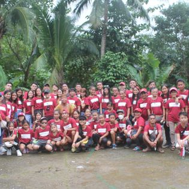
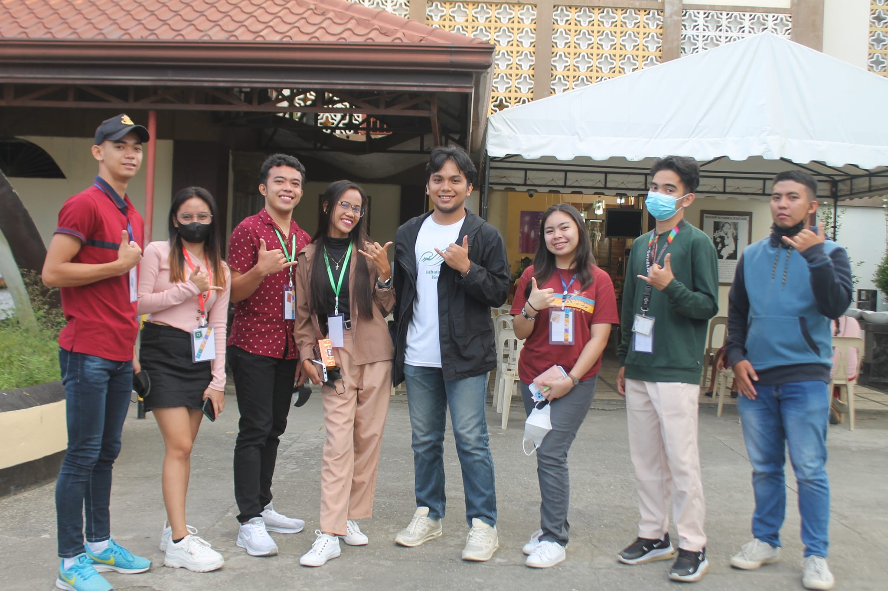
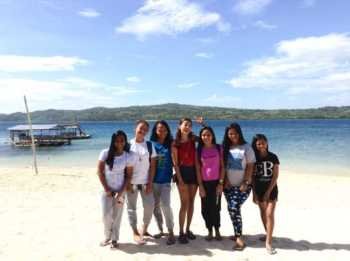

{kind=link}
MyAchievements





If you can find something you're really passionate about, jump on that. If you're passionate about [something] and you bring your talent, you'll be unstoppable.
Download CVI was born and raised in Montelago Naujan Oriental Mindoro. I'm always confident about the combination of my experience, knowledge, and qualities. I'm always an academic achiever when I'm in grade school and highschool. On personal level, I am detail-oriented, organized, and precised to what I'm doing.
Reade MoreVariety of career opinions- IT is not something about computers and its hardware, in fact it is about the technology, it is spread its work areas in world wide web(www) and web development and technical writer etc. Practical aspects- students like me always will be in dilemma whether what we are studying is really applied in real life or not.
Read MoreGraphic design is a craft where professionals create visual content to communicate messages. They are not artist and they need to stop thinking they are artist. When dealing with art and design specific demographics and viewers interpret the messages of each subject in different ways. Art is said to be elucidated and design is said to be understood.
Read MoreSimply speaking, a photojournalist's role is to relate a story through photography. The goal is not only to take pictures, but to hold the images up to the highest journalistic standards in an effort to convey the truth. Not every one of a photojournalist's images will pass the test, just as every traditional journalist has to pitch multiple stories before one is accepted.
Read More